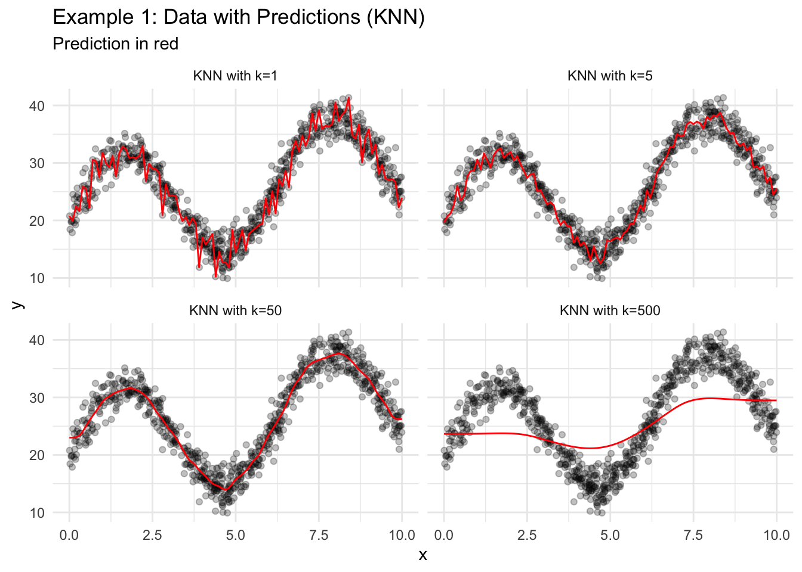
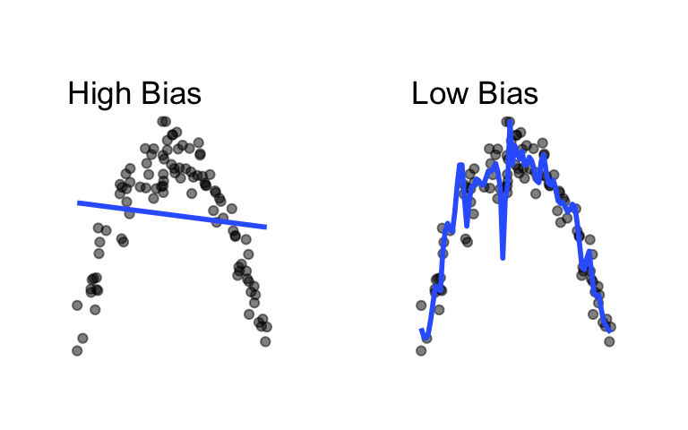
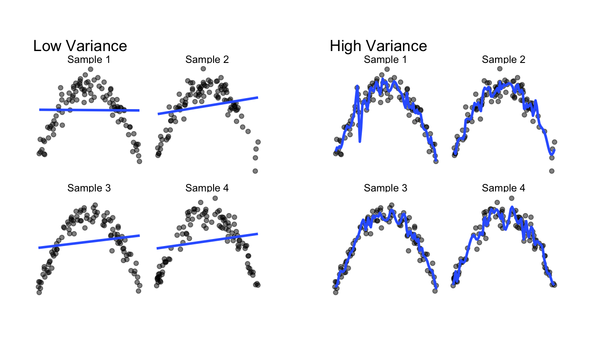
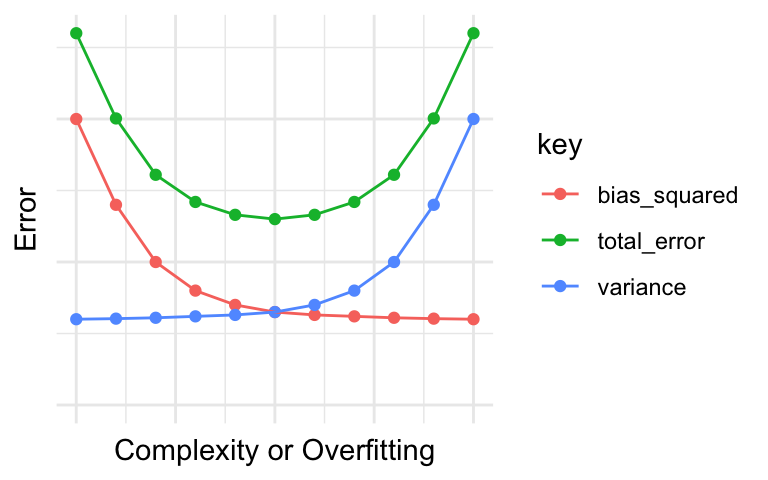
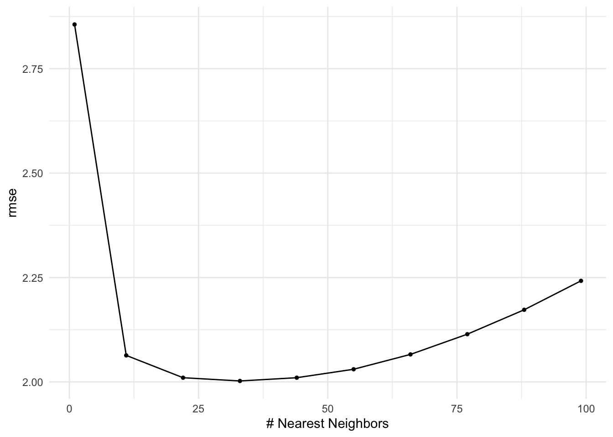
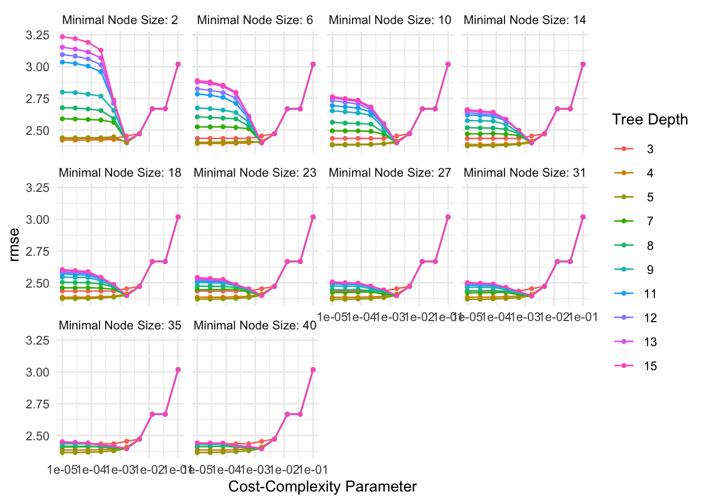

18 Predictive Modeling Concepts
18.1 Regression
Predictive modeling is split into two approaches: regression and classification.
Predictive modeling with a numeric outcome.
Note: Regression and ordinary least squares linear regression (which we often informally refer to simply as “linear regression”) are different ideas. We will use many algorithms for regression applications that are not linear regression.
Predictive modeling with a categorical outcome. The output of these models can be predicted classes of a categorical variable or predicted probabilities (e.g. 0.75 for “A” and 0.25 for “B”).
This chapter will focus on regression. A later chapter focuses on classification.
With regression, our general goal is to fit \(\hat{f}(\vec{x})\) using modeling data that will minimize predictive errors on unseen data. There are many algorithms for fitting \(\hat{f}(\vec{x})\). For regression, most of these algorithms fit conditional means; however, some use conditional quantiles like the conditional median.
Families of predictive models:
- linear
- trees
- naive
- kernel
- NN
18.2 Regression Algorithms
Let’s explore a few algorithms for generating predictions in regression applications. Consider some simulated data with 1,000 observations, one predictor, and one outcome.
For reasons explained later, we split the data into a training data set with 750 observations and a testing data set with 250 observations.
Figure 18.1 visualizes the training data.
# visualize the data
data1_train |>
ggplot(aes(x = x, y = y)) +
geom_point(alpha = 0.25) +
labs(title = "Example 1 Data") +
theme_minimal()18.2.1 Linear Regression
- Find the line that minimizes the sum of squared errors between the line and the observed data.
Note: Linear regression is linear in its coefficients but can fit non-linear patterns in the data with the inclusion of higher order terms (for example, \(x^2\)).
Figure 18.2 shows four different linear regression models fit to the training data. Degree is the magnitude of the highest order term included in the model.
For example, “Degree = 1” means \(\hat{y}_i = b_0 + b_1x_i\) and “Degree = 3” means \(\hat{y}_i = b_0 + b_1x_i + b_2x_i^2 + b_3x_i^3\).
Code
lin_reg_model1 <- linear_reg() |>
set_engine(engine = "lm") |>
set_mode(mode = "regression") |>
fit(formula = y ~ x, data = data1_train)
lin_reg_model2 <- linear_reg() |>
set_engine(engine = "lm") |>
set_mode(mode = "regression") |>
fit(formula = y ~ poly(x, degree = 2, raw = TRUE), data = data1_train)
lin_reg_model3 <- linear_reg() |>
set_engine(engine = "lm") |>
set_mode(mode = "regression") |>
fit(formula = y ~ poly(x, degree = 3, raw = TRUE), data = data1_train)
lin_reg_model4 <- linear_reg() |>
set_engine(engine = "lm") |>
set_mode(mode = "regression") |>
fit(formula = y ~ poly(x, degree = 4, raw = TRUE), data = data1_train)
# create a grid of predictions
new_data <- tibble(x = seq(0, 10, 0.1))
predictions_grid <- tibble(
x = seq(0, 10, 0.1),
`Degree = 1` = predict(object = lin_reg_model1, new_data = new_data)$.pred,
`Degree = 2` = predict(object = lin_reg_model2, new_data = new_data)$.pred,
`Degree = 3` = predict(object = lin_reg_model3, new_data = new_data)$.pred,
`Degree = 4` = predict(object = lin_reg_model4, new_data = new_data)$.pred
) |>
pivot_longer(-x, names_to = "model", values_to = ".pred")
ggplot() +
geom_point(data = data1_train, aes(x = x, y = y), alpha = 0.25) +
geom_path(data = predictions_grid, aes(x = x, y = .pred), color = "red") +
facet_wrap(~model) +
labs(
title = "Example 1: Data with Predictions (Linear Regression)",
subtitle = "Prediction in red"
) +
theme_minimal()18.2.2 KNN
- Find the \(k\) closest observations using only the predictors. Closeness is typically measured with Euclidean distance.
- Take the mean of the outcome variables for the \(k\) closest observations.
Code
# create a knn model specification
knn_mod1 <-
nearest_neighbor(neighbors = 1) |>
set_engine(engine = "kknn") |>
set_mode(mode = "regression") |>
fit(formula = y ~ x, data = data1_train)
knn_mod5 <-
nearest_neighbor(neighbors = 5) |>
set_engine(engine = "kknn") |>
set_mode(mode = "regression") |>
fit(formula = y ~ x, data = data1_train)
knn_mod50 <-
nearest_neighbor(neighbors = 50) |>
set_engine(engine = "kknn") |>
set_mode(mode = "regression") |>
fit(formula = y ~ x, data = data1_train)
knn_mod500 <-
nearest_neighbor(neighbors = 500) |>
set_engine(engine = "kknn") |>
set_mode(mode = "regression") |>
fit(formula = y ~ x, data = data1_train)
# create a grid of predictions
new_data <- tibble(x = seq(0, 10, 0.1))
predictions_grid <- tibble(
x = seq(0, 10, 0.1),
`KNN with k=1` = predict(object = knn_mod1, new_data = new_data)$.pred,
`KNN with k=5` = predict(object = knn_mod5, new_data = new_data)$.pred,
`KNN with k=50` = predict(object = knn_mod50, new_data = new_data)$.pred,
`KNN with k=500` = predict(object = knn_mod500, new_data = new_data)$.pred
) |>
pivot_longer(-x, names_to = "model", values_to = ".pred")
# visualize the data
ggplot() +
geom_point(data = data1_train, aes(x = x, y = y), alpha = 0.25) +
geom_path(data = predictions_grid, aes(x = x, y = .pred), color = "red") +
facet_wrap(~model) +
labs(
title = "Example 1: Data with Predictions (KNN)",
subtitle = "Prediction in red"
) +
theme_minimal()
18.2.3 Regression Trees
- Consider all binary splits of all predictors to split the data into two groups. Choose the split that results in groups with the lowest MSE for the outcome variable within each group.
- Repeat step 1 recursively until a stopping parameter is reached (cost complexity, minimum group size, tree depth).
Decision Tree: The Obama-Clinton Divide from the New York Times is a clear example of a regression tree.
Code
reg_tree_mod1 <-
decision_tree(cost_complexity = 0.1) |>
set_engine(engine = "rpart") |>
set_mode(mode = "regression") |>
fit(formula = y ~ x, data = data1_train)
reg_tree_mod2 <-
decision_tree(cost_complexity = 0.01) |>
set_engine(engine = "rpart") |>
set_mode(mode = "regression") |>
fit(formula = y ~ x, data = data1_train)
reg_tree_mod3 <-
decision_tree(cost_complexity = 0.001) |>
set_engine(engine = "rpart") |>
set_mode(mode = "regression") |>
fit(formula = y ~ x, data = data1_train)
reg_tree_mod4 <-
decision_tree(cost_complexity = 0.0001) |>
set_engine(engine = "rpart") |>
set_mode(mode = "regression") |>
fit(formula = y ~ x, data = data1_train)
# create a grid of predictions
new_data <- tibble(x = seq(0, 10, 0.1))
predictions_grid <- tibble(
x = seq(0, 10, 0.1),
`Regression Tree with cp=0.1` = predict(object = reg_tree_mod1, new_data = new_data)$.pred,
`Regression Tree with cp=0.01` = predict(object = reg_tree_mod2, new_data = new_data)$.pred,
`Regression Tree with cp=0.001` = predict(object = reg_tree_mod3, new_data = new_data)$.pred,
`Regression Tree with cp=0.0001` = predict(object = reg_tree_mod4, new_data = new_data)$.pred
) |>
pivot_longer(-x, names_to = "model", values_to = ".pred")
# visualize the data
ggplot() +
geom_point(data = data1_train, aes(x = x, y = y), alpha = 0.25) +
geom_path(data = predictions_grid, aes(x = x, y = .pred), color = "red") +
facet_wrap(~model) +
labs(
title = "Example 1: Data with Predictions (Regression Trees)",
subtitle = "Prediction in red"
) +
theme_minimal()Regression trees generate a series of binary splits that can be visualized. Consider the simple tree from Figure 18.3 where cp=0.1.
Linear regression is a parameteric approach. It requires making assumptions about the functional form of the data and reducing the model to a finite number of parameters.
KNN and regression trees are nonparametric approaches to predictive modeling because they do not require an assumption about the functional form of the model. The data-driven approach of nonparametric models is appealing because it requires fewer assumptions, but it often requires more data and care to not overfit the modeling data.
Regression trees are the simplest tree-based algorithms. Other tree-based algorithms, like gradient-boosted trees and random forests, often have far better performance than regression trees.
18.3 Error
Different applications call for different error metrics. Root mean squared error (RMSE) and mean squared error (MSE) are popular metrics for regression.
\[ RMSE = \sqrt{\frac{1}{n}\sum_{i = 1}^n (y_i - \hat{y}_i)^2} \tag{18.1}\]
\[ MSE = \frac{1}{n}\sum_{i = 1}^n (y_i - \hat{y}_i)^2 \tag{18.2}\]
Let’s consider the MSE for a single observation \((x_0, y_0)\) and think about the model that generates \(\hat{y_0}\), which we will denote \(\hat{f}(x_0)\).
\[ MSE = (y_0 - \hat{f}(x_0))^2 \tag{18.3}\]
Assuming \(y_i\) independent and \(y_i - \hat{y}_i \sim N(0, \sigma^2)\), we can decompose the expected value of MSE into three types of error: irreducible error, bias error, and variance error. Understanding the types of error will inform modeling decisions.
\[ E[MSE] = E[y_0 - \hat{f}(x_0)]^2 = Var(\epsilon) + [Bias(\hat{f}(x_0))]^2 + Var(\hat{f}(x_0)) \tag{18.4}\]
\[ E[MSE] = E[y_0 - \hat{f}(x_0)]^2 = \sigma^2 + (\text{model bias})^2 + \text{model variance} \tag{18.5}\]
Error that can’t be reduced regardless of model quality. This is often caused by factors that affect the outcome of interest that aren’t measured or included in the data set.
Difference between the expected prediction of a predictive model and the correct value. Bias error is generally the error that comes from approximating complicated real-world problems with relatively simple models.
Here, the model on the left does a poor job fitting the data (high bias) and the model on the right does a decent job fitting the data (low bias).
Code
set.seed(20200225)
sample1 <- tibble(
x = runif(100, min = -10, max = 10),
noise = rnorm(100, mean = 10, sd = 10),
y = -(x ^ 2) + noise
)
grid.arrange(
sample1 |>
ggplot(aes(x, y)) +
geom_point(alpha = 0.5) +
geom_smooth(method = "lm",
se = FALSE) +
theme_void() +
labs(title = "High Bias") +
theme(plot.margin = unit(c(1, 1, 1, 1), "cm")),
sample1 |>
ggplot(aes(x, y)) +
geom_point(alpha = 0.5) +
geom_smooth(se = FALSE,
span = 0.08) +
theme_void() +
labs(title = "Low Bias") +
theme(plot.margin = unit(c(1, 1, 1, 1), "cm")),
ncol = 2
)
How much the predicted value (\(\hat{y}\)) and fitted model (\(\hat{f}\)) change for a given data point when using a different sample of data to fit the model.
Here, the model on the left does not change much as the training data change (low variance) and the model on the right changes a lot when the training data change (high variance).
Code
set.seed(20200226)
sample2 <- tibble(
sample_number = rep(c("Sample 1", "Sample 2", "Sample 3", "Sample 4"), 100),
x = runif(400, min = -10, max = 10),
noise = rnorm(400, mean = 10, sd = 10),
y = -(x ^ 2) + noise
)
grid.arrange(
sample2 |>
ggplot(aes(x, y)) +
geom_point(alpha = 0.5) +
geom_smooth(method = "lm",
se = FALSE,
alpha = 0.5) +
facet_wrap(~sample_number) +
theme_void() +
labs(title = "Low Variance") +
theme(plot.margin = unit(c(1, 1, 1, 1), "cm")),
sample2 |>
ggplot(aes(x, y)) +
geom_point(alpha = 0.5) +
geom_smooth(se = FALSE,
span = 0.08,
alpha = 0.5) +
facet_wrap(~sample_number) +
theme_void() +
labs(title = "High Variance") +
theme(plot.margin = unit(c(1, 1, 1, 1), "cm")),
ncol = 2
)
As can be seen in the error decomposition and plots above, for any given amount of total prediction error, there is a trade-off between bias error and variance error. When one type of error is reduced, the other type of error increases.
The bias-variance trade-off can generally be reconceived as
- underfitting-overfitting tradeoff
- simplicity-complexity tradeoff

Our objective is to make accurate predictions on unseen data. It is important to make sure that models make accurate predictions on the modeling data and the implementation data.
The predictive error of a model measured on the data used to estimate the predictive model.
The predictive error of a model measured on the data not used to estimate the predictive model. Out-of-sample error is generally greater than the in-sample error.
How well a model makes predictions on unseen data relative to how well it makes predictions on the data used to estimate the model.
18.4 Spending Data
Predictive modelers strategically “spend data” to create accurate models that generalize to the implementation data. We will focus on two strategies: the training-testing split and v-fold cross validation.
A subset of data used to develop a predictive model. The share of data committed to a training set depends on the number of observations, the number of predictors in a model, and heterogeneity in the data. 0.8 is a common share.
A subset of data used to estimate model performance. The testing set usually includes all observations not included in the testing set. Do not look at these data until the very end and only estimate the out-of-sample error rate on the testing set once. If the error rate is estimated more than once on the testing data, it will underestimate the error rate.
Break the data into \(v\) equal-sized, exclusive groups. Train the model on data from \(v - 1\) folds (analysis data) and measure the error metric (i.e. RMSE) on the left-out fold (assessment data). Repeat this process \(v\) times, each time leaving out a different fold. Average the \(v\) error metrics.
\(v\)-fold cross-validation is sometimes called \(k\)-fold cross-validation.
Strategies for spending data differ based on the application and the size and nature of the data. Ideally, the training-testing split is made at the beginning of the modeling process. The \(v\)-fold cross-validation is used on the testing data for comparing
- approaches for feature/target engineering
- algorithms
- hyperparameter tuning
When information that won’t be available when the model makes out-of-sample predictions is used when estimating a model. Looking at data from the testing set creates data leakage. Data leakage leads to an underestimate of out-of-sample error.
Feature and target engineering is a common source of data leakage.
For example, regularized regression models expect variables to be normalized (divide each predictor by the sample mean and divide by the sample standard deviation). A naive approach would be to calculate the means and standard deviations once one the full data set and use them on the testing data or use them in cross validation. This causes data leakage and biased underestimates of the out-of-sample error rate.
New means and standard deviations need to be estimated every time a model is fit including within each iteration of a resampling method! This is a lot of work, but library(tidymodels) makes this simple.
18.5 Predictive Modeling Pipelines
The rest of this chapter focuses on a predictive modeling pipeline applied to the simulated data. This pipeline is a general approach to creating predictive models and can change based on the specifics of an application. We will demonstrate the pipeline using KNN and regression trees.
- Problem Formulation
- Split data into training and testing data
- Exploratory Data Analysis
- Set up Resampling for Model Selection
- Create Candidate Models
- Test and Choose the “Best” Model
- Optional: Expand the Model Fit
- Evaluate the Final Model
- Optional: Implement the Final Model
18.5.1 Example: KNN
1. Split data into training and testing data
2. Exploratory Data Analysis
Only perform EDA on the training data.
Exploring the testing data will lead to data leakage.
3. Set up Resampling for Model Selection
We use 10-fold cross validation for hyperparameter tuning and model selection. The training data are small (750 observations and one predictor), so we will repeat the entire cross validation process five times.
Estimating out-of-sample error rates with cross-validation is an uncertain process. Repeated cross-validation improves the accuracy of our estimated error rates.
4. Create Candidate Models
We have three main levers for creating candidate models:
- Feature and target engineering. Feature and target engineering is generally specified when creating a recipe with
recipe()andstep_*()functions. - Switching algorithms. Algorithms are specified using functions from
library(parsnip). - Hyperparameter tuning. Hyperparameter tuning is typically handled by using
tune()when picking an algorithm and then creating a hyperparameter tuning grid.
It is common to normalize (subtract the sample mean and divide by the sample standard deviation) predictors when using KNN.
We use nearest_neighbor() to create a KNN model and we use tune() as a placeholder for k. Note that we can tune many hyperparameters for a given model. The Regression Tree example later in this chapter illustrates this concept.
We use grid_regular() to specify a hyperparameter tuning grid for potential values of \(k\).
# A tibble: 10 × 1
neighbors
<int>
1 1
2 11
3 22
4 33
5 44
6 55
7 66
8 77
9 88
10 99Finally, we combine the recipe and model objects into a workflow().
5. Test and Choose the “Best” Model
tune_grid() fits the models to the repeated cross validation with differing hyperparameters and captures RMSE against each evaluation data set.
We can quickly extract information from the tuned results object with functions like collect_metrics(), show_best(), and autoplot().
# A tibble: 10 × 7
neighbors .metric .estimator mean n std_err .config
<int> <chr> <chr> <dbl> <int> <dbl> <chr>
1 1 rmse standard 2.86 50 0.0325 Preprocessor1_Model01
2 11 rmse standard 2.06 50 0.0209 Preprocessor1_Model02
3 22 rmse standard 2.01 50 0.0200 Preprocessor1_Model03
4 33 rmse standard 2.00 50 0.0193 Preprocessor1_Model04
5 44 rmse standard 2.01 50 0.0197 Preprocessor1_Model05
6 55 rmse standard 2.03 50 0.0205 Preprocessor1_Model06
7 66 rmse standard 2.07 50 0.0221 Preprocessor1_Model07
8 77 rmse standard 2.11 50 0.0242 Preprocessor1_Model08
9 88 rmse standard 2.17 50 0.0266 Preprocessor1_Model09
10 99 rmse standard 2.24 50 0.0291 Preprocessor1_Model10# A tibble: 5 × 7
neighbors .metric .estimator mean n std_err .config
<int> <chr> <chr> <dbl> <int> <dbl> <chr>
1 33 rmse standard 2.00 50 0.0193 Preprocessor1_Model04
2 22 rmse standard 2.01 50 0.0200 Preprocessor1_Model03
3 44 rmse standard 2.01 50 0.0197 Preprocessor1_Model05
4 55 rmse standard 2.03 50 0.0205 Preprocessor1_Model06
5 11 rmse standard 2.06 50 0.0209 Preprocessor1_Model02
6. Optional: Expand the Model Fit
Sometimes we will pick the best predictive model specification (feature and target engineering + algorithm + hyperparameters) and fit the model on all of the training data.
First, finalize the workflow with the “best” hyperparameters from the tuned results.
Second, use last_fit() to fit the model on all of the data.
select_best() takes a narrow view of model selection and picks the model with the lowest error rate.
It is important to consider other elements when picking a “best.” Other considerations include parsimony, cost, and equity.
7. Evaluate the Final Model
The final fit object contains the out-of-sample error metric from the testing data. This metric is our best estimate of model performance on unseen data.
In this case, the testing data error is slightly higher than the training data error, which makes sense.
8. Optional: Implement the Final Model
final_fit and pedict() can be used to apply the model to new, unseen data.
Only implement the model if it achieves the objectives of the final model.
18.5.2 Example: Regression Trees
We’ll next work with a subset of data from the Chicago data set from library(tidymodels).
chicago_small <- Chicago |>
select(
ridership,
Clark_Lake,
Quincy_Wells,
Irving_Park,
Monroe,
Polk,
temp,
percip,
Bulls_Home,
Bears_Home,
WhiteSox_Home,
Cubs_Home,
date
) |>
mutate(weekend = wday(date, label = TRUE) %in% c("Sat", "Sun")) |>
glimpse()Rows: 5,698
Columns: 14
$ ridership <dbl> 15.732, 15.762, 15.872, 15.874, 15.423, 2.425, 1.467, 15…
$ Clark_Lake <dbl> 15.561, 15.720, 15.558, 15.745, 15.602, 2.413, 1.374, 9.…
$ Quincy_Wells <dbl> 8.371, 8.351, 8.359, 7.852, 7.621, 0.911, 0.414, 4.807, …
$ Irving_Park <dbl> 3.744, 3.853, 3.861, 3.843, 3.878, 1.735, 1.164, 2.903, …
$ Monroe <dbl> 5.672, 6.013, 5.786, 5.959, 5.769, 1.044, 0.530, 3.165, …
$ Polk <dbl> 2.481, 2.436, 2.526, 2.450, 2.573, 0.006, 0.000, 1.065, …
$ temp <dbl> 19.45, 30.45, 25.00, 22.45, 27.00, 24.80, 18.00, 32.00, …
$ percip <dbl> 0.00, 0.00, 0.00, 0.00, 0.00, 0.00, 0.00, 0.00, 0.00, 0.…
$ Bulls_Home <dbl> 0, 1, 0, 0, 0, 1, 0, 0, 0, 0, 0, 0, 0, 0, 0, 0, 0, 0, 0,…
$ Bears_Home <dbl> 0, 0, 0, 0, 0, 0, 0, 0, 0, 0, 0, 0, 0, 0, 0, 0, 0, 0, 0,…
$ WhiteSox_Home <dbl> 0, 0, 0, 0, 0, 0, 0, 0, 0, 0, 0, 0, 0, 0, 0, 0, 0, 0, 0,…
$ Cubs_Home <dbl> 0, 0, 0, 0, 0, 0, 0, 0, 0, 0, 0, 0, 0, 0, 0, 0, 0, 0, 0,…
$ date <date> 2001-01-22, 2001-01-23, 2001-01-24, 2001-01-25, 2001-01…
$ weekend <lgl> FALSE, FALSE, FALSE, FALSE, FALSE, TRUE, TRUE, FALSE, FA…0. Problem Formulation
The variable ridership is the outcome variable. It measures ridership at the Clark/Lake L station in Chicago. The variables Clark_Lake, Quincy_Wells, Irving_Park, Monroe, and Polk measure ridership at several stations 14 days before the ridership variable.
The objective is predict ridership to better allocate staff and resources to the Clark/Lake L station.
1. Split data into training and testing data
2. Exploratory Data Analysis
This chapter in “Feature and Target Engineering” contains EDA for the data set of interest.
3. Set up Resampling for Model Selection
We use 10-fold cross validation for hyperparameter tuning and model selection. The training data are larger in the previous example, so we skip repeats.
4. Create Candidate Models
We will use regression trees for this example. For feature and target engineering, we will simply remove the date column.
We specify a regression tree with the rpart engine.
We use grid_regular() to specify a hyperparameter tuning grid for potential values of the cost-complexity parameter, tree depth parameter, and minimum n.
rpart_grid <- grid_regular(
cost_complexity(range = c(-5, -1)),
tree_depth(range = c(3, 15)),
min_n(),
levels = 10
)
rpart_grid# A tibble: 1,000 × 3
cost_complexity tree_depth min_n
<dbl> <int> <int>
1 0.00001 3 2
2 0.0000278 3 2
3 0.0000774 3 2
4 0.000215 3 2
5 0.000599 3 2
6 0.00167 3 2
7 0.00464 3 2
8 0.0129 3 2
9 0.0359 3 2
10 0.1 3 2
# ℹ 990 more rowsFinally, we combine the recipe and model objects into a workflow().
5. Test and Choose the “Best” Model
rpart_res <-
rpart_workflow |>
tune_grid(resamples = chicago_folds,
grid = rpart_grid,
metrics = metric_set(rmse))
rpart_res |>
collect_metrics()# A tibble: 1,000 × 9
cost_complexity tree_depth min_n .metric .estimator mean n std_err
<dbl> <int> <int> <chr> <chr> <dbl> <int> <dbl>
1 0.00001 3 2 rmse standard 2.44 10 0.0414
2 0.0000278 3 2 rmse standard 2.44 10 0.0414
3 0.0000774 3 2 rmse standard 2.44 10 0.0414
4 0.000215 3 2 rmse standard 2.44 10 0.0414
5 0.000599 3 2 rmse standard 2.44 10 0.0414
6 0.00167 3 2 rmse standard 2.45 10 0.0418
7 0.00464 3 2 rmse standard 2.47 10 0.0456
8 0.0129 3 2 rmse standard 2.67 10 0.0392
9 0.0359 3 2 rmse standard 2.67 10 0.0392
10 0.1 3 2 rmse standard 3.02 10 0.0383
# ℹ 990 more rows
# ℹ 1 more variable: .config <chr># A tibble: 5 × 9
cost_complexity tree_depth min_n .metric .estimator mean n std_err
<dbl> <int> <int> <chr> <chr> <dbl> <int> <dbl>
1 0.00001 5 40 rmse standard 2.37 10 0.0374
2 0.0000278 5 40 rmse standard 2.37 10 0.0374
3 0.00001 5 35 rmse standard 2.37 10 0.0374
4 0.0000278 5 35 rmse standard 2.37 10 0.0374
5 0.0000774 5 35 rmse standard 2.37 10 0.0369
# ℹ 1 more variable: .config <chr># A tibble: 1 × 4
cost_complexity tree_depth min_n .config
<dbl> <int> <int> <chr>
1 0.00001 5 40 Preprocessor1_Model0921
6. Optional: Expand the Model Fit
Sometimes we will pick the best predictive model specification (feature and target engineering + algorithm + hyperparameters) and fit the model on all of the training data.
First, finalize the workflow with the “best” hyperparameters from the tuned results.
Second, use last_fit() to fit the model on all of the data.
7. Evaluate the Final Model
The final fit object contains the out-of-sample error metric from the testing data. This metric is our best estimate of model performance on unseen data.
In this case, the testing data error is slightly higher than the training data error, which makes sense.
8. Optional: Implement the Final Model
If we think an expected error of around 2,340 people is appropriate, we can implement this model for the Chicago Transit Authority.
Instead, we’re going back to the drawing board in our class lab to see if we can do better.1
Pretend we haven’t already touched the testing data!↩︎